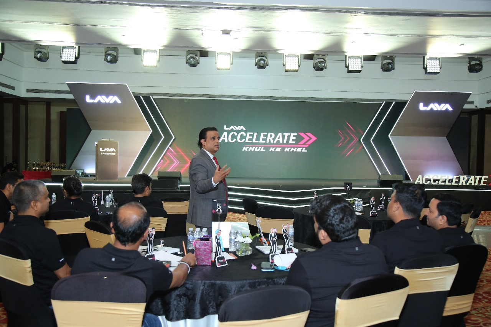

Communication, empathy & adaptability: The true core of lasting professional growth.

Communication
Clear, compassionate communication creates powerful leadership and trust.
Adaptability
Handling change gracefully and guiding others through uncertainty is a true skill.
Empathy
Empathy builds connection, collaboration and long-term impact in teams.
Soft skills are not just a nice-to-have — they are a necessity. In a world run by collaboration and communication, technical skills help you enter the room, but soft skills help you stay and thrive in it.
📣 Communication Is Leadership
Clear speech and active listening build clarity, resolve conflicts, and uplift entire teams. Influence begins with how you express.
🔠Adaptability in Action
Soft-skilled professionals shift with change, calmly guide teams through storms, and turn chaos into opportunity. This is real-time leadership.
💠Empathy Is Strength
Empathy isn't softness. It's strategic. It builds psychological safety, trust, and honest collaboration across generations.
🌟 Final Thought
Soft skills are the power tools of people. Mastering them elevates you beyond knowledge — into true leadership.